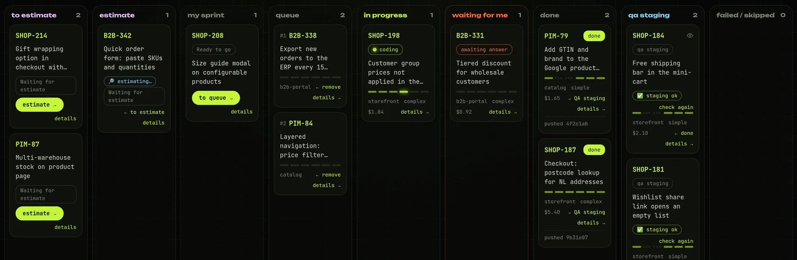
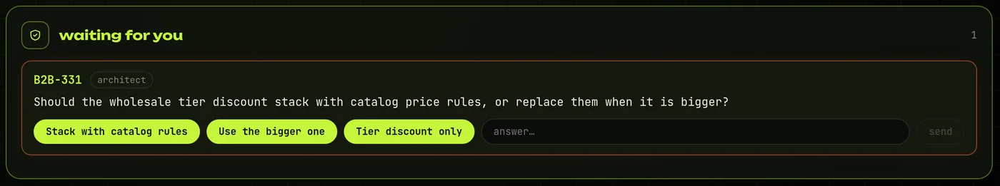
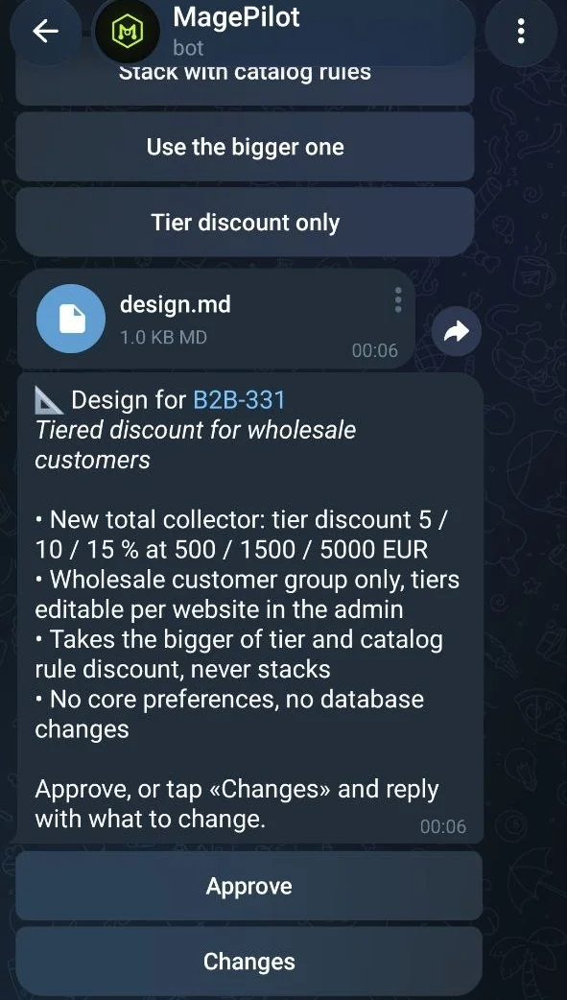
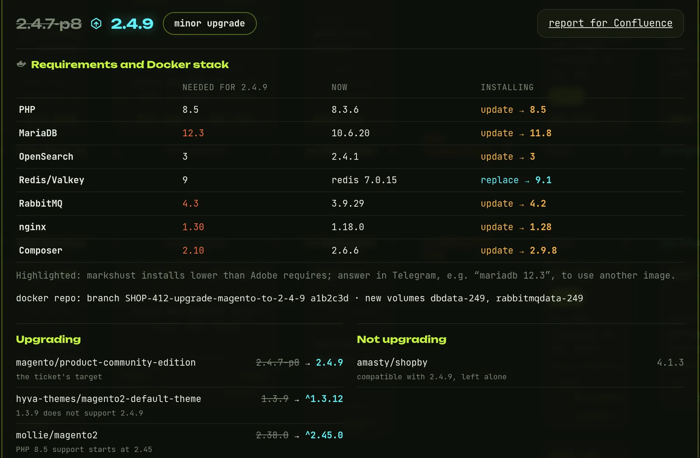
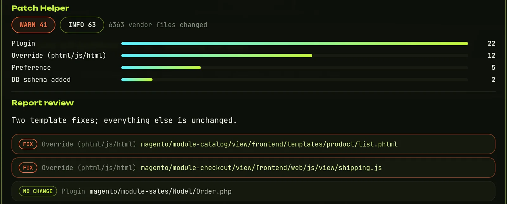
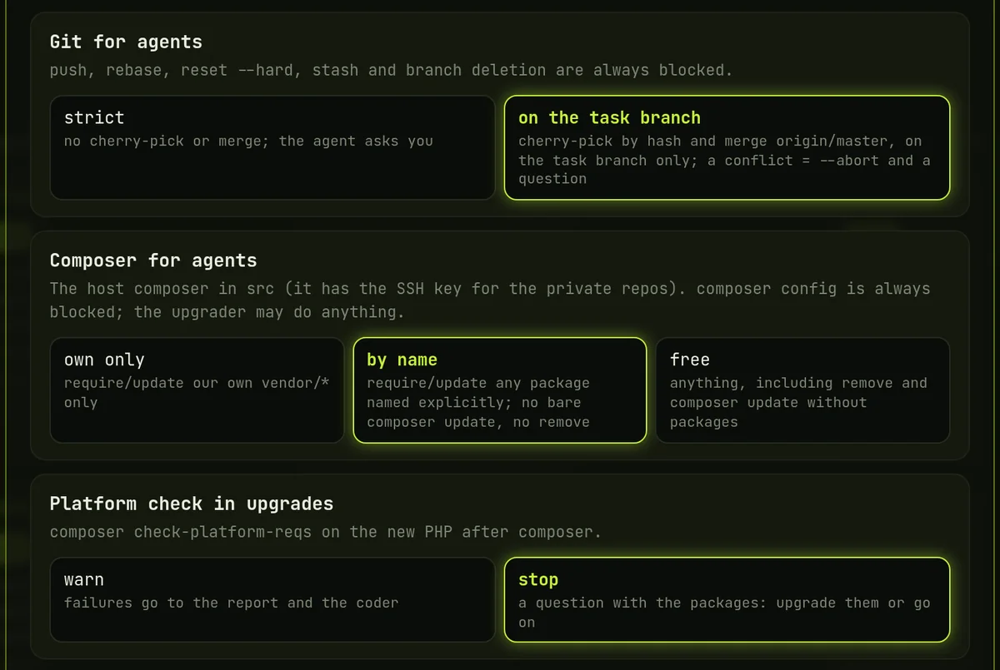

Estimates on demand
Drag a ticket to the estimate column and get hours per work item, assumptions, risks, questions for the client and a comment ready to post in Jira.
In use on real Magento tickets. New: Magento upgrades. Source code is not public yet.
MagePilot picks up sprint tickets from Jira, investigates the code, implements the change inside the project's docker-magento stack, checks it in a real browser and pushes a branch. You approve designs from your phone and open the pull request yourself.
coder Branch B2B-331-tiered-discount created from origin/master
coder New total collector, no core preferences
coder GrumPHP passed inside the container
Design approved. Coding has started on a fresh branch.
Agents handle the investigation, design, code and QA, each with its own permissions. Tickets run one at a time, on their own branch.
Pulls your sprint tickets into a local queue. Jira stays read-only.
Reads the ticket and the codebase and picks the path for the work.
Writes a design for bigger changes.
You approve in TelegramImplements on a fresh branch. Commits pass GrumPHP in the container.
Checks the result in a real browser and sends screenshots.
The orchestrator pushes the branch and sends a report.
You review and open the PREvery project follows the same docker-magento layout, so one tool can drive all of them. It starts a stack when it needs one and can run a second project on shifted ports.

When an agent is unsure, or a design needs your approval, MagePilot asks in Telegram. Answer with a button, a reply or a voice message. Work on that ticket waits for you, and the queue moves on if you don't answer in time.


An upgrade ticket takes its own route. Composer is ten minutes of it; the rest is checking everything around it, so that's what the agents do, in this order, stopping to ask when the decision is yours.
Requirements first. What the target needs (PHP, MariaDB, OpenSearch, Valkey, RabbitMQ, Composer) next to what the project's Docker stack runs today.
A new stack on its own branch. New images in compose.yaml on a branch of the docker repo, fresh DB volumes, a database dump first. Going back is a git switch.
Composer, then the new PHP. The host composer resolves the upgrade, then check-platform-reqs runs inside the new PHP container. A failing package stops the run and asks you.
Patches and overrides. Composer patches are re-applied or dropped. The Ampersand Patch Helper lists each changed core file the project overrides, and an agent reviews every one.
setup:upgrade and QA. di:compile, then the usual browser QA and a report you can paste into Confluence.


Drag a ticket to the estimate column and get hours per work item, assumptions, risks, questions for the client and a comment ready to post in Jira.
When a task reaches staging, an agent walks the acceptance criteria on the site as a customer and reports back with screenshots.
Reply to an agent with a voice message. It is transcribed locally, and you confirm the text before it is sent.
A new Jira comment is checked against the pushed branch. If it needs code changes, you decide whether the task goes back to the coder.
After QA, a read-only agent reviews the branch for injection, missing escaping, ACL and CSRF gaps. Switch it on or off per project.
QA leaves hand-test steps on the card, so the reviewer and the client's tester repeat exactly what was checked.
One button: the old branch is renamed and kept, the task's files are archived, and the ticket starts clean from the investigation.
Questions and reports come in the developer's language, whatever language the ticket is written in.
Agents run unattended in real project folders, and they read ticket text written by other people, so any ticket can carry a prompt injection. A hook checks every tool call before it runs.
| An agent tries | The hook answers |
|---|---|
git push | Pushing is done by the orchestrator. |
git commit --no-verify | Commit hooks must run. |
git rebase, stash, clean | History and worktree rewrites are not allowed. |
Reading .netrc, .ssh/, auth.json | Reading credentials is not allowed. |
curl to an outside host | Outbound HTTP is not allowed. Only the local stack answers. |
bin/stop, docker | Containers are managed by the orchestrator. |
| Writing outside the project and task folders | Blocked, with the list of allowed folders. |
A settings window sets the levels, globally or per store. Git for agents: strict, or cherry-pick by hash and merging origin/master on the task branch only. Composer: own packages only, any package named explicitly, or free. Uncommitted work in your folder: wait, stash and give it back, or ask in Telegram. Whatever the level, push, rebase, reset --hard and composer config stay blocked.

Known limit: the command deny-list matches patterns. It catches an agent's mistakes, but it won't stop a determined bypass, such as an HTTP call from a script. OS-level isolation is on the roadmap.
Runs include estimate-only tickets and runs that were interrupted or stopped to wait for an answer, so this measures activity. Outcome metrics such as cost per ticket and first-pass QA rate are next on the roadmap.
Senior Magento 2 / Adobe Commerce developer and backend lead, with 12 years in PHP and 8+ years of hands-on Magento. I work on multi-store platforms, ERP and payment integrations, performance and CI/CD. I built MagePilot and use it on my own tickets.
Open to senior PHP roles, ideally Magento. Remote, based in Wrocław, Poland. If you run Magento stores and want to see MagePilot working on a real ticket, write to me as well.
MagePilot is built with Python, the Claude Agent SDK, Playwright and a Telegram bot, on top of docker-magento by Mark Shust.